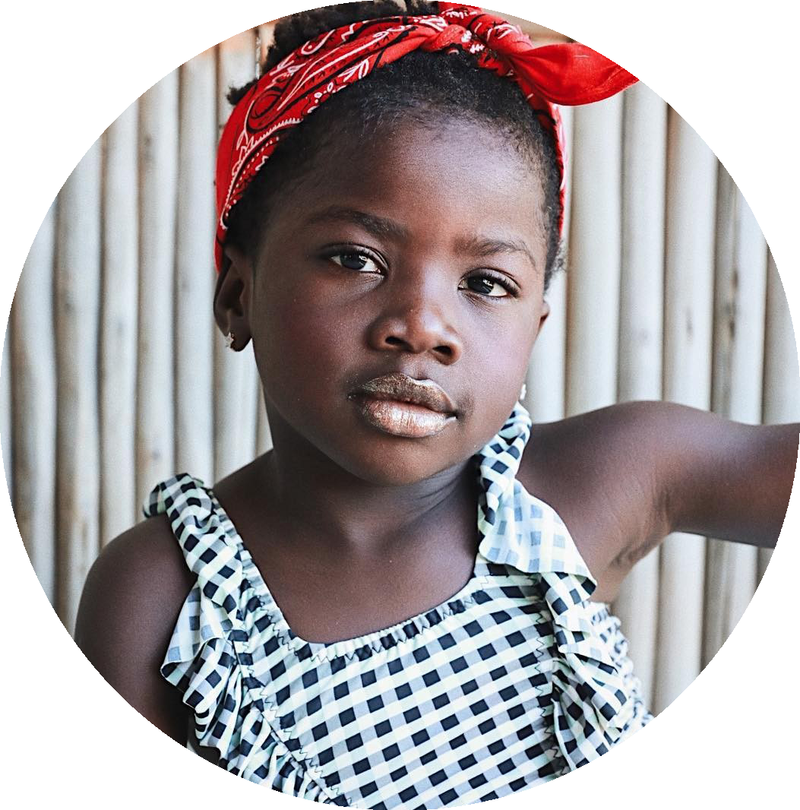

Will Smith
Willard Carroll “Will” Smith Jr. é um ator, rapper, produtor cinematográfico, produtor musical e produtor de televisão americano. Will afirmou que ainda convive com o “preconceito constantemente” na escalação de atores para determinados papeis, apesar de raramente lidar diretamente com o racismo. “Eu não quero trabalhar para eles [racistas]”, disse Smith. “E as vezes que tentam entrar em contato comigo eu prefiro ficar longe dessas pessoas.”

Titi Gagliasso
Titi, filha do casal de atores Giovanna Ewbank e Bruno Gagliasso, foi alvo de preconceito na internet. A menina, de 4 anos, foi chamada de “macaca”, em um vídeo gravado pela socialite Day McCarthy. Giovanna respondeu: “Racismo é crime, e já estamos tomando as devidas providências perante a lei”. “Numa sociedade racista, não basta não ser racista. É necessário ser antirracista”.
Glória Maria
A primeira repórter negra da TV brasileira, Glória Maria, foi barrada na porta de um hotel de luxo no Rio de Janeiro, no começo de sua carreira. “Fui a primeira repórter negra da televisão. A primeira a apresentar o jornal das sete, a primeira no comando do ‘Fantástico’…, mas tive que enfrentar muitas barreiras e obstáculos para conseguir as coisas. Tudo é mais difícil para um negro. Você tem que provar 100 vezes que você é o melhor. É cansativo, duro, doloroso. Se você não tiver uma força extraordinária, não consegue passar por isso. Mas eu vim ao mundo para lutar. Sou uma guerreira!”
Thiaguinho
O cantor Thiaguinho foi vítima de preconceito em um restaurante. “Fui almoçar num restaurante de shorts, camiseta e chinelo. Quando o manobrista trouxe o meu carro e eu fui entrar, ele colocou a mão na frente. Não achou que aquele carro pudesse ser o meu e perguntou: ‘Você é o dono?’ Tem um preconceito velado quando alguém vê um negro com um carrão. Logo perguntam: ‘É jogador ou pagodeiro?’. Ou seja, no Brasil o negro só pode ter dinheiro se tiver uma dessas duas profissões. E vivem me perguntando se sou jogador.”